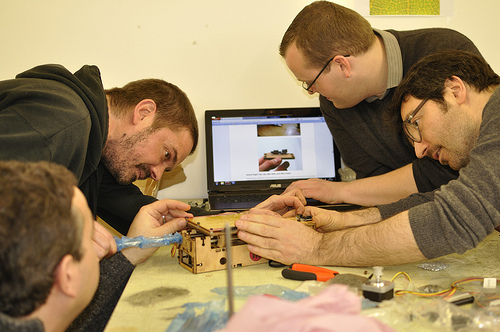
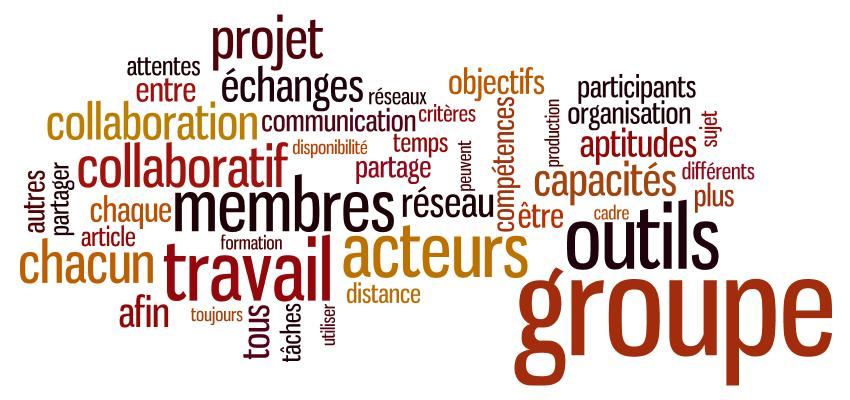
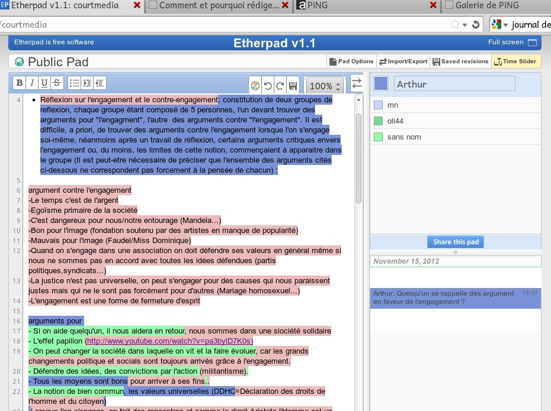

Travail Collaboratif
C’est une activité coordonnée entre plusieurs personnes qui interagissent dans un but commun MAIS se partagent les tâches
Web 2.0
Internet, Tout y est pour apprendre
Etherpad ou Framapad
GitHub
Versionnez votre code et document

social bookmarking
=> indexer des ressources dans un espace en ligne